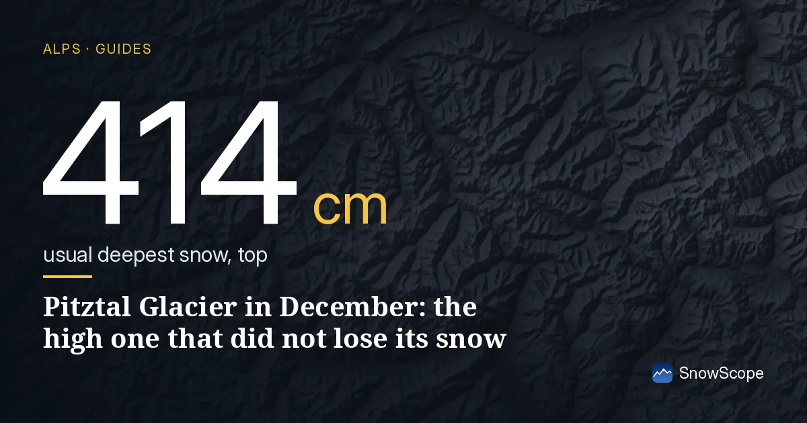

Pitztaler Gletscher فدجنبر: المحطة العالية اللي ما خسراتش التلج ديالها
أغلب المنحنيات ديال دجنبر فالألب هابطة. Pitztaler Gletscher هو الاستثناء: فالتاريخ ديالنا ديال 46 شتوة، المعدل ديال دجنبر فالوسط (2576 م) طلع من 77 سم فأول 15 شتوة ل 85 سم فآخر 15. هنا التلج هو الجزء المضمون؛ والثمن هو اللي خاصو التفكير.
شوف توقعات التلج مباشرة ديال Pitztaler Gletscher فالتطبيق ديال SnowScopeالعلو ديال التلج، التنبيهات والخريطة 3D، فابور.
دجنبر، زمان ودابا
فالفوق (3424 م) المعدل ديال دجنبر طلع من 142 سم فأول 15 شتوة ل 174 سم فآخر 15. حتى المحطة ديال الواد (1728 م) طلعات من 31 ل 35 سم. هادشي ما معناهش البرد زاد، معناه هاد الركن العالي ديال Tirol مازال كيجيه أغلب الشتا ديالو تلج.
فسيمانة نوال، كل وحدة من آخر 15 شتوة كان فيها 30 سم ولا كثر فالوسط، والنسبة اللي فيها 30 سم فأول تيليسييج طلعات من 60 % ل 67 %.


العلوات اللي كيعطيو
من الوسط لفوق هي المنطقة ديال دجنبر. نهار 15 دجنبر عادي فيه 87 سم فالوسط و 171 سم فالفوق. فسيمانة 15 حتى 21 دجنبر كل الشتوات كان فيهم 30 سم ولا كثر فالجوج، وف 85 % من الشتوات الوسط كان فيه 60 سم ولا كثر فسيمانة نوال.
لتحت قصة أخرى: 32 سم نهار 15 دجنبر عادي، وغير 59 % من الشتوات وصلو ل 30 سم فسيمانة 15 حتى 21 دجنبر. النهار العادي ديال 30 سم لتحت هو 10 دجنبر. خطط تهبط بالتيليفيريك.
الثمن ديال السيمانة
اللائحة الرسمية ديال 2026-27 فيها ثمن واحد للموسم: 77 EUR للنهار و 410 EUR ل 6 أيام. ما كاينش تخفيض قبل نوال: ماشي سيمانة رخيصة، سيمانة مضمونة.
زيادة مزيانة فنفس اللائحة: من السكيباس ديال 2 أيام لفوق، كاين نهار فابور ف Kaunertal ولا Winterberg Fendels ولا Hochzeiger. المحطة القريبة Rifflsee كتحل نهار 12 دجنبر 2026.
Stubaier Gletscher فنفس العوام
Stubaier Gletscher، شي وديان للشرق، فيه تقريبا نفس التلج ديال دجنبر فالوسط: 86 سم ف 2450 م نهار 15 دجنبر عادي و 100 % ديال الشتوات فيهم 30 سم فسيمانة 15 حتى 21 دجنبر. أول تيليسييج فيه (1692 م) فيه شوية كثر من Pitztal، 40 سم.
فالثمن Stubai أرخص شوية: 75,50 EUR للنهار و 355 EUR ل 6 أيام فالموسم الكبير. الحجة ديال Pitztal هي العلو: الفوق ديالو ف 3424 م، أعلى من 3208 م ديال Stubai.
نصائح للحجز
إلا بغيتي أضمن تلج فدجنبر لعائلة ما كتطلعش للفوق، Stubai كيعطي نفس التلج فالوسط بثمن أقل شوية. إلا بغيتي العلو، النهار الزايد فكلاسيي آخر والاتجاه لصالحك، Pitztal كيستاهل الثمن ديالو.
نصايح للي كيتزلجو
- شري على الأقل سكيباس ديال 2 أيام: كيزيدك نهار فابور ف Kaunertal ولا Fendels ولا Hochzeiger.
- فدجنبر تزلج من الوسط لفوق (من تقريبا 2576 م) وهبط للواد بالتيليفيريك.
- ف 3424 م يقدر يكون البرد قاسح فدجنبر: حمي الوجه والصبعان.
- خارج البيست فالكلاسيي: شقوق وانهيارات، قرا النشرة ديال Tirol وخود گيد.
خرائط أخرى (مواقع خارجية)
المراجع والمصادر
- Pitztaler Gletscher: official lift-pass prices (2026-27), checked 13 November 2026 www.pitztaler-gletscher.at/media/pt_price_winter_26_27.pdf
- Stubaier Gletscher: official lift-pass prices (2026-27), checked 13 November 2026 www.stubaier-gletscher.com/en/ski-area/prices/
على هاد الأرقام
الأرقام ديال التلج: التاريخ ديال التلج ديال SnowScope، 46 شتوة اللي فاتت (1980-81 حتى ل 2025-26) فالعلوات ديال المحطة، مصحح بالعلو (تقدير لمنطقة، ماشي البلاغات ديال المحطة)؛ «تلج مزيان» = 30 سم ولا كثر فالأرض فالمعدل ديال السيمانة. الخريطة: العلو العادي ديال التلج نهار 15 دجنبر موزع على التضاريس حسب العلو. البيستات والتيليسييجات: OpenSkiMap. الأثمنة ديال السكيباس: اللوائح الرسمية ديال المحطات، متشافة نهار 13 نونبر 2026؛ الأثمنة تقدر تتبدل.
النشرات الرسمية ديال الانهيارات: Avalanche.report – Euregio Tyrol
كيفاش تستاشهد بهاد المقال
للبحث، التعليم ولا الصحافة: الأرقام والرسومات تقدر تعاود تخدم بيهم بحرية تحت CC BY 4.0 مع هاد الاستشهاد.
SnowScope (2026), Pitztaler Gletscher فدجنبر: المحطة العالية اللي ما خسراتش التلج ديالها, https://snowscope.app/blog/ar/2026/11/pitztal-glacier-december-ski-snow-sure-price.html, تشاف ف 2026-11-14
SnowScope (Atlas Labs). (2026, November 14). Pitztaler Gletscher فدجنبر: المحطة العالية اللي ما خسراتش التلج ديالها. SnowScope snow reports. https://snowscope.app/blog/ar/2026/11/pitztal-glacier-december-ski-snow-sure-price.html
BibTeX
@misc{snowscope2026pitztalglacierdecembersk,
author = {{SnowScope (Atlas Labs)}},
title = {Pitztaler Gletscher فدجنبر: المحطة العالية اللي ما خسراتش التلج ديالها},
year = {2026},
month = nov,
howpublished = {\url{https://snowscope.app/blog/ar/2026/11/pitztal-glacier-december-ski-snow-sure-price.html}},
note = {Published 2026-11-14 14:54 UTC; accessed 2026-11-14}
}· CC BY 4.0 · الطريقة، الداتا والأدوات →
Pitztaler Gletscher: التلج والحرارة حسب العلو، هاد الشتا مقارنة مع اللي فاتت (الأدوات) →
تابع Pitztaler Gletscher
فابور: ميساج ملي يجي التلج، والتوقعات كل صباح.